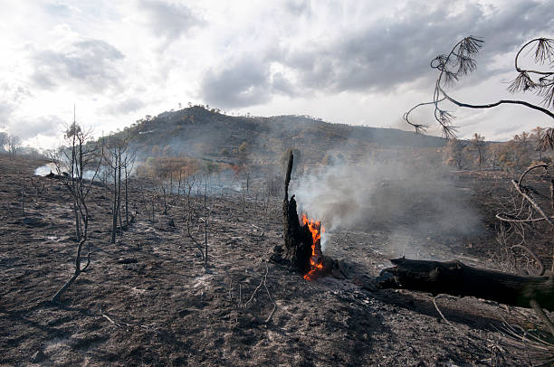
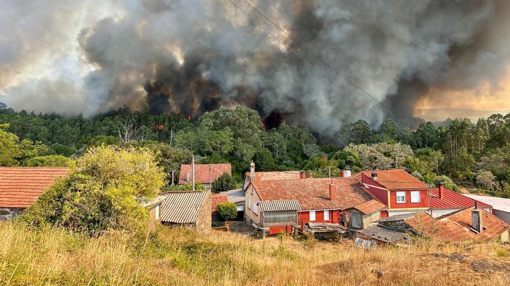
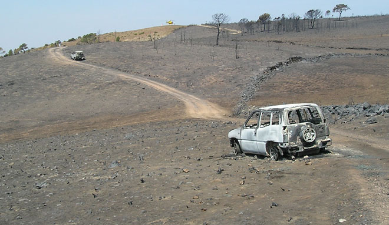
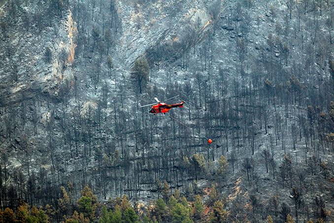
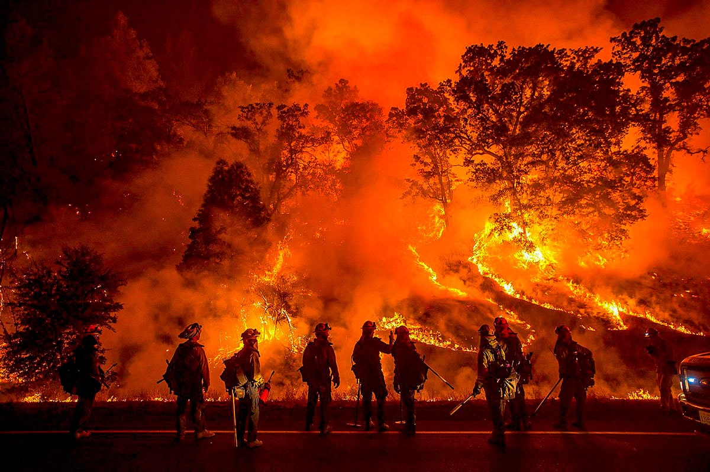

Un recorrido interactivo por la historia de los incendios forestales (1968-2023)
Desliza para comenzar la historia

Entre 1968 y 2023 se han quemado en España casi 7,9 millones de hectáreas. En este mapa de calor inicial se observan las zonas con mayor recurrencia histórica.

El 55% de los incendios en España son provocados. Galicia es la zona más castigada por esta tipología, concentrando casi la mitad de las hectáreas quemadas intencionadamente.

En 2005, el incendio de Riba de Saelices (Guadalajara) recordó el coste más alto del fuego: 11 miembros del retén perdieron la vida en un siniestro causado por una negligencia.

Más allá del valor ecológico, el fuego supone un impacto económico brutal. El incendio de Sant Mateu de Bages (1994) generó pérdidas por valor de 54,8 millones de euros.

Aunque solo representan el 0,6% del total, los incendios de más de 500 Ha calcinan el 41% de toda la superficie quemada en España.